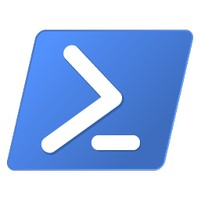
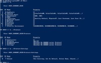

PowerShell (programming language)
PowerShell is an object-oriented automated task framework that information technology (IT) professionals use to configure systems and automate various administrative tasks. Originally created by Microsoft, PowerShell is an open-source project that can be installed on computers running on Windows, macOS, or Linux platforms. The term “PowerShell” is typically used to refer to both the interactive PowerShell command environment itself and the scripting language it uses. PowerShell is based on the .NET Framework and includes both a command-line shell and a scripting language. It can also be accessed through the PowerShell Integrated Scripting Environment (ISE), which was created to help users work more efficiently with PowerShell. From its earliest iteration, PowerShell was designed to automate system tasks and create systems management tools for common processes. The first version of PowerShell was released for Windows XP, Windows Server 2003, and Windows Vista in November 2006. Several updated versions have been created and released since that time.
Windows PowerShell icon version 5.0 Microsoft [Public domain]Sample session with PowerShell registry provider Microsoft [Public domain]Background
PowerShell was first developed by Microsoft’s Jeffrey Snover. Prior to joining Microsoft in 1999, Snover worked for Digital Equipment Corporation (DEC). Through his experiences at DEC, Snover became familiar with both Microsoft Windows and other operating systems, including UNIX. In the course of his work, Snover noted that Windows had neither the power nor the flexibility to automate tasks available in UNIX. Up to that point, every version of Windows that had been released had a command-line interface (CLI), but that interface was only capable of supporting basic commands. It was simply not sophisticated enough to handle all aspects of the graphical user interface (GUI) functionality. The first step towards the implementation of a more capable CLI came with the introduction of Windows Script Host with Windows 98. While it represented a step up from Microsoft’s earlier CLI, Windows Script Host was still relatively limited in function and challenging to use. Seeking a better solution, Snover came up with the idea to construct a standardized platform that used the .NET Framework through objects and automation tasks. The .NET Framework is a Microsoft-developed virtual machine used for compiling and executing programs written in a variety of programming languages. Based on Snover’s suggestion, Microsoft developed a new CLI with an accompanying shell dubbed Monad. After producing several beta versions, Microsoft rechristened Monad as PowerShell in April 2006. The first full version of PowerShell was released the following November. With this, PowerShell became one of the key components of the Windows operating system.
A number of updated versions of PowerShell have subsequently been produced. PowerShell 2.0 was released with Windows 7 and Windows Server 2008 in 2009. Three years later, PowerShell 3.0 debuted alongside Windows 8 and Windows Server 2012. In 2013, PowerShell 4.0 was introduced with Windows 8.1 and Windows Server 2012 R2. PowerShell 5.0 first appeared in late 2015. The following year, Microsoft made PowerShell an open-source, which means that the software and original source code was made available to developers at no charge. At the same time, Microsoft continued working to improve PowerShell. To that end, PowerShell 6.0 was released in 2018. New and updated versions of PowerShell are still being developed.
Overview
To properly understand what PowerShell is, how it works, and what it can do, it is first necessary to understand the concept of a shell. In computer science, a shell is a user interface that allows a person to access the various services that are part of an operating system. A given shell may be either CLI- or GUI-based. A CLI-based shell utilizes a text interface into which users may type commands. GUI-based shells feature a more complex visual interface that gives users the freedom to interact with graphical icons and visual indicators. The primary version of PowerShell is CLI-based. PowerShell ISE is GUI-based.
PowerShell is essentially a tool designed to help users automate tedious administration tasks. It can accomplish this through the use of PowerShell cmdlets, scripts, functions, or executables. Cmdlets are the fundamental building blocks of PowerShell. Cmdlets are .NET application programming interface (API) classes that appear as system commands. Each cmdlet performs a single specified function. Each cmdlet is also associated with help content that provides details such as its description, command syntax, an explanation of its parameters, and an example. In total, PowerShell boasts more than two hundred basic cmdlets. Some of these include Move-Item, which moves a file, and New-Item, which allows for the creation of a new file. Cmdlets act as recipients in a pipeline, receiving and outputting results as objects. PowerShell invokes cmdlets on an object in sequence. PowerShell scripts are collections of PowerShell commands. More specifically, these scripts are combinations of cmdlets and associated logic. This ability to combine multiple commands ultimately makes it easier to automate tasks. PowerShell functions are blocks of programming code that allow the user to combine multiple statements and improve the overall reusability of their code. Such functions are useful when the same task needs to be carried out multiple times, eliminating the need to copy and paste the same code repeatedly. Executables are standalone tools that PowerShell can use to automate tasks. PowerShell functions can also be grouped together into PowerShell modules. PowerShell modules are a set of PowerShell functions that are aligned to manage all aspects of a particular area. Such modules allow users to reference, load, persist, and share code. There are four types of PowerShell modules: script, binary, manifest, and dynamic. Script modules contain various functions that allow the user to perform import, export, and management functions. Binary modules are often used to create cmdlets with powerful features. Manifest modules are special modules with an associated PowerShell data file that holds manifest information. Dynamic modules are created dynamically on-demand by a script.
PowerShell ISE is a host application that is used to write, test, and debug scripts or write commands in a Windows GUI. PowerShell ISE is equipped with special features like syntax coloring, multiline editing, context-sensitive help, and tab completion. Aesthetically and functionally, PowerShell ISE bears a close resemblance to Windows and other similar GUIs. Users can point and click, as well as highlight, copy, and paste content with a mouse. Among other things, PowerShell ISE also features tabs that allow the user to work on multiple tasks at once.
Bibliography
Aiello, Joey, et al. “Getting Started with Windows PowerShell.” Microsoft, 4 June 2017, docs.microsoft.com/en-us/powershell/scripting/getting-started/getting-started-with-windows-powershell?view=powershell-6. Accessed 24 June 2019.
“Introduction to .NET Framework.” GeeksforGeeks, 2019, www.geeksforgeeks.org/introduction-to-net-framework. Accessed 24 June 2019.
Parchisanu, Daniel. “Simple Questions: What Is PowerShell in Windows, and What You Can Do with It?” Digital Citizen, 25 Oct. 2018, www.digitalcitizen.life/simple-questions-what-powershell-what-can-you-do-it. Accessed 24 June 2019.
“PowerShell.” Techopedia, 2019, www.techopedia.com/definition/25975/powershell. Accessed 24 June 2019.
Rouse, Margaret. “PowerShell.” TechTarget, June 2017, searchwindowsserver.techtarget.com/definition/PowerShell. Accessed 24 June 2019.
Stroud, Forrest. “PowerShell.” Webopedia, 2019, www.webopedia.com/TERM/P/powershell.html. Accessed 24 June 2019.
Turowski, Jacob. “PowerShell: What It Is & What Can You Do with It?” CCB Technology, 2019, ccbtechnology.com/what-is-powershell. Accessed 24 June 2019.
“What Are PowerShell Commands? Understanding PowerShell’s Cmdlets with Code Examples, Tutorials, and More.” Stackify, 19 Apr. 2017, stackify.com/what-are-powershell-commands. Accessed 24 June 2019.
© 2019 by Salem Press, Inc., A Division of EBSCO Information Services, Inc.